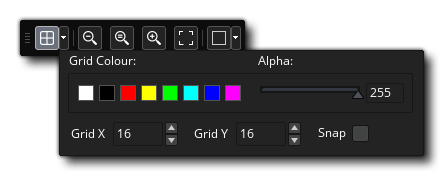
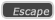
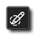
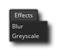

L'éditeur d'image est l'endroit où vous pouvez créer vos propres images-objets ou modifier celles que vous avez importées ou créées précédemment. Si vous avez précédemment utilisé des outils d'image, cela devrait vous être familier, mais il y a quelques points à noter lors de l'utilisation de l'éditeur d'image de GameMaker Studio 2, qui peuvent ne pas être immédiatement visibles:
- Lorsque vous créez plusieurs cadres, vous pouvez dessiner à eux comme ils animent! Donc, si vous appuyez sur le bouton de lecture dans la barre de contrôle du cadre, puis sélectionnez un pinceau et commencez à dessiner dans la fenêtre de l'éditeur, vous verrez que les cadres s'animeront dans l'éditeur et ce que vous dessinez sera ajouté au cadre dans ce moment. Vous pouvez expérimenter avec différentes fréquences d'images jusqu'à ce que vous obteniez quelque chose que vous aimez, mais une fois que vous avez compris comment cela fonctionne, vous créerez des sprites dynamiques et des effets en un rien de temps.
- Vous pouvez retirer l'onglet Image Editor de la fenêtre de l'espace de travail principal dans sa propre fenêtre. Cela peut être pratique lorsque vous utilisez plusieurs moniteurs, par exemple.
- Lorsque vous utilisez les fonctions de copie pour, par exemple, copier une sélection d'une image, la sélection copiée est ajoutée à votre liste de pinceaux. Cela signifie que vous pouvez sélectionner une partie d'une image et l'utiliser ensuite dans le reste des outils de peinture pour dessiner des lignes, des polygones ou simplement peindre librement. La brosse peut être mise à l'échelle et mélangée avec une couleur aussi. Notez que la fonctionnalité Coller n'est pas destinée à être utilisée en interne dans l'éditeur car tout ce que vous copiez est ajouté à la liste des pinceaux et peut donc être sélectionné pour "coller" de cette façon. Au lieu de coller, il vous suffit de capturer quelque chose d'un programme externe et de le coller dans l'éditeur d'image.
- Vous pouvez avoir plusieurs couches pour chaque sprite grâce à l'éditeur de couche pratique. Ces couches peuvent être commandées et même placées dans des dossiers pour faciliter la création d'images plus complexes.
Ce ne sont que quelques-unes des fonctionnalités les plus avancées que l'éditeur d'image offre. Pour connaître la gamme complète des fonctionnalités, veuillez lire les éléments ci-dessous détaillant les fonctions de chaque partie de l'éditeur:
Cette partie de la fenêtre montre les images dans l'ordre dans lequel elles seront animées. Vous pouvez cliquer sur le bouton (+) à gauche pour ajouter d'autres images - ou utiliser le menu Image - et vous pouvez également cliquer et faire glisser l'un des cadres pour changer sa position le long de la ligne de temps. En haut à gauche de la vue du cadre, vous pouvez activer Onion Skinning
, ce qui signifie que dans une seule image d'une animation d'image-objet, vous pouvez choisir de voir l'une des images précédentes ou suivantes en tant que couche semi-transparente sous l'image que vous êtes en train d'éditer. Ce qui est génial, c'est que chaque image est légèrement plus claire que la précédente, ce qui vous permet de voir comment l'animation a progressé d'une image à l'autre tout en dessinant la suivante. En activant ceci, vous verrez des contrôles supplémentaires sur les cadres que vous pouvez cliquer et faire glisser pour définir le nombre d'images précédentes à afficher ainsi que le nombre d'images suivantes.
Sous le bouton Pelure d'oignon, vous avez le bouton Contrôle de boucle Utilisé pour définir si l'image-objet boucle (revient à l'image 1 lorsque la dernière image est atteinte) ou ping-pongs (retourne dans les images lorsque la dernière image est atteinte). Le bouton Lecture
en bas est pour démarrer / arrêter l'aperçu de l'animation.
Vous pouvez cliquer sur n'importe quel cadre pour le sélectionner pour l'éditer, et un cadre sélectionné aura une icône Supprimer
dans le coin supérieur sur lequel vous pouvez cliquer pour supprimer le cadre de l'image-objet. Vous pouvez également cliquer sur
/
+
sur plusieurs images pour les sélectionner ensemble, auquel cas cliquer sur l'icône Supprimer supprimera toutes les images sélectionnées.
Cette barre contient les contrôles de cadre. Vous pouvez définir ici la vitesse à laquelle les images d'animation doivent être lues à l'aide de la zone de saisie située à gauche. La vitesse d'image peut être basée sur "Frames per second", ou "Frames per frame frame". Le nombre total d'images disponibles est affiché à droite avec l'image en cours sélectionnée, et vous pouvez réduire cette barre (en la masquant) en cliquant sur
icône à gauche. Notez que la valeur utilisée ici pour la vitesse d'animation définit également la façon dont l'image-objet est animée lorsqu'elle est utilisée dans un jeu, soit en tant qu'entité de sprite sur une couche, soit en tant que sprite assignée à une instance. les fonctions et variables appropriées.
Les contrôles de canevas traitent de divers aspects de l'affichage de la toile de dessin principale et de son contenu. Les options sont:
- Basculer la grille de toile
: Ceci va activer / désactiver la grille de toile. Il s'agit d'une grille que GameMaker Studio 2 dessine sur le canevas principal pour le diviser en sections et qui, par défaut, a une taille de 1 px. Cependant, si vous cliquez sur l'icône du menu Grille
vous allez ouvrir les options de la grille:  Ces options vous permettent de définir la couleur et l'alpha de la grille, ainsi que les valeurs des cellules de la grille le long des axes X et Y. Vous avez également une option pour activer ou désactiver l'accrochage à la grille ici (désactivé par défaut).
- Contrôles de zoom sur toile
: Ces boutons contrôlent le niveau de zoom de la toile en cours. Vous pouvez effectuer un zoom avant ou arrière et cliquer sur
Le bouton réinitialisera le canevas à 1: 1 avec l'image en cours d'édition. Notez que vous pouvez également effectuer un zoom avant et arrière en utilisant
et en appuyant sur
pour adapter la toile entière de la pièce à l'espace de travail de l'éditeur en cours (cela fera un zoom avant / arrière selon le cas pour l'ajuster).
- Toile fendue : Si vous cliquez sur ce bouton, vous séparerez horizontalement le canevas en le séparant verticalement en un canevas unique. Lorsque vous êtes dans une vue de canevas divisé, chaque canevas possède son propre ensemble de contrôles Canvas, ce qui vous permet de zoomer l'un sur l'autre, par exemple, et de modifier les canevas avec les modifications reflétées dans l'autre canevas. Pour modifier la bascule de la vue de la toile, vous pouvez cliquer sur les options de partage
Ceci est la fenêtre d'édition principale pour vos images. Ici vous pouvez appliquer n'importe lequel des outils sur la droite pour peindre sur le calque actuellement sélectionné. Vous pouvez peindre avec le bouton gauche ou droit de la souris (et attribuer une couleur à chacun à partir du sélecteur de couleur ) et utiliser l'un des pinceaux définis en haut à droite de l'éditeur. Vous pouvez aussi utiliser
+
Cette petite barre en bas montre les différentes valeurs pour la position de la souris et la largeur et la hauteur des outils de sélection dans l'éditeur.
Ici vous pouvez sélectionner la brosse à peindre avec. Par défaut, vous avez le choix entre différentes formes de brosses carrées et rondes, mais vous pouvez facilement créer votre propre pinceau en peignant sur le calque d' image, puis en sélectionnant la partie que vous souhaitez utiliser pour le nouveau pinceau et en utilisant
clé et il sera supprimé.
Le haut de cette section contient un nombre ou des nuances de couleurs prédéfinies que vous pouvez choisir, et elles peuvent être assignées à gauche
boutons de la souris respectivement en cliquant sur eux avec l'un ou l'autre bouton (vous pouvez également échanger les couleurs entre chaque bouton en cliquant sur l'icône de la flèche à côté des échantillons). Les couleurs sélectionnées seront affichées ci-dessous en tant qu'échantillons à côté de l'image de la souris, et vous pourrez ensuite cliquer sur celles-ci pour ouvrir la fenêtre Color Picker:
À partir de cette fenêtre, vous pouvez définir la couleur en utilisant l'un des curseurs et gadgets disponibles, ou vous pouvez saisir des valeurs directement pour les valeurs RGBA ou les valeurs HVS. Notez que si vous double cliquez
Vous pouvez donc créer une palette de couleurs personnalisée dans une image d'image-objet, puis l'utiliser pour définir la palette d'une autre image-objet dans l'arborescence des ressources. Vous pouvez également ouvrir une image-objet et importer la palette de couleurs.
Ci-dessous, nous GameMaker Studio 2 les outils disponibles par défaut avec GameMaker Studio 2 - notez que tous les outils peuvent être utilisés avec la gauche
Ceci est l'outil de crayon. Il utilise le pinceau sélectionné pour peindre dans la couleur sélectionnée pour le bouton de la souris, et vous pouvez définir la taille à partir de la barre supérieure de l'éditeur d'image, ainsi qu'activer / désactiver le lissage (interpolation). Notez que vous pouvez également redimensionner et mettre à l'échelle n'importe quelle brosse en maintenant enfoncé + Z puis en cliquant
C'est l'outil Gomme. Il utilise le pinceau sélectionné pour effacer une zone sur un clic de l'un ou l'autre bouton de la souris. La sélection ajoutera également des outils supplémentaires à la barre supérieure de l'éditeur pour vous permettre de mettre à l'échelle le pinceau ou activer / désactiver le lissage (interpolation). C'est l'outil de seau de peinture. Cela remplira une zone de l'image basée sur le paramètre de tolérance alpha choisi, que vous pouvez modifier à l'aide du curseur affiché dans la barre supérieure de l'éditeur. C'est l'outil de suppression de la couleur. Lorsque vous le sélectionnez, vous pouvez cliquer sur C'est l'outil de remplacement de la couleur. Lorsque vous le sélectionnez, vous pouvez cliquer sur Cet outil tracera une ligne entre deux points. Cliquez une fois avec l'un des boutons pour créer le premier point, puis cliquez de nouveau ailleurs pour créer un autre point et les joindre. La ligne sera dessinée en utilisant le pinceau sélectionné pour créer le contour, et vous pouvez éditer certaines des propriétés du pinceau en utilisant la barre supérieure de l'éditeur (taille, lissage (interpolation), etc...). Cet outil dessine un rectangle rempli ou un rectangle. Si vous cliquez en haut à gauche de l'icône, il sera souligné, tandis que le clic en bas à droite sera rempli et si vous avez besoin des deux, vous pouvez sélectionner cette option dans la barre supérieure de l'éditeur d'image (ou utiliser et cliquez pour dessiner à partir du centre de la position de la souris.
Cet outil dessine une ellipse remplie ou soulignée. Si vous cliquez en haut à gauche de l'icône, il sera souligné, tandis que le clic en bas à droite sera rempli et si vous avez besoin des deux, vous pouvez sélectionner cette option dans la barre supérieure de l'éditeur d'image (ou utiliser Cet outil dessine soit un polygone rempli ou un polygone décrit. Si vous cliquez en haut à gauche de l'icône, il sera souligné, tandis que le clic en bas à droite sera rempli et si vous avez besoin des deux, vous pouvez sélectionner cette option dans la barre supérieure de l'éditeur d'image (ou utiliser C'est l'outil spline. Il utilise le pinceau sélectionné pour créer une spline. Vous cliquez et maintenez le bouton de la souris pour définir un point, puis faites glisser la souris pour générer la spline, relâcher la souris et répéter pour ajouter d'autres points et courbes. La spline sera dessinée en utilisant la brosse sélectionnée, qui peut être éditée en utilisant la barre supérieure de l'éditeur pour définir la taille et le lissage (interpolation). La barre supérieure a également un paramètre pour les itérations qui définira la douceur de la spline résultante (les valeurs de l'amant seront plus rugueuses, plus lisses, et la valeur par défaut est 10). C'est l'outil de saisie de texte. Il crée une nouvelle couche de texte dans laquelle vous pouvez taper tout ce dont vous avez besoin. Vous pouvez définir la police à utiliser ainsi que la mise en forme à partir de la barre supérieure de l'éditeur d'image. L'outil Eye-Dropper vous permet d'échantillonner une couleur de l'image en cours d'édition. Avec cet outil, vous pouvez générer une sélection rectangulaire. Vous pouvez annuler une sélection à partir du menu Image ou en appuyant sur .  Avec cet outil, vous pouvez "peindre" une zone sélectionnée en utilisant l'une des brosses, y compris les brosses personnalisées. Tous les mêmes raccourcis clavier s'appliquent comme pour l'outil Crayon. L'outil de sélection de la baguette magique sélectionne les zones de la même couleur en fonction de la valeur de tolérance définie. Si vous cochez " Couleur uniquement ", la valeur alpha ne sera pas prise en compte. Vous pouvez annuler une sélection à partir du menu Image ou en appuyant sur . C'est l'outil de rotation. Si vous avez sélectionné une zone à l'aide de l'outil Sélection, cliquez dessus pour faire pivoter la zone sélectionnée de 0 ° à 360 ° de manière arbitraire. Si vous n'avez pas sélectionné une zone de l'image, cela vous permettra de faire pivoter la brosse actuelle. Pour faire pivoter, maintenez simplement le bouton gauche de la souris C'est l'outil miroir. En sélectionnant ceci, le pinceau actuel sera réfléchi le long de l'axe vertical. Cette option ne crée pas de nouvelle forme et n'affectera que la manière dont le style actuel est dessiné. C'est l'outil de retournement. En sélectionnant ceci, le pinceau actuel sera réfléchi le long de l'axe horizontal. Cette option ne crée pas de nouvelle forme et n'affectera que la manière dont le style actuel est dessiné. C'est l'outil de panoramique. Lorsque vous sélectionnez ceci, vous pouvez cliquer sur
Vous pouvez créer des calques dans l'éditeur d'image pour différentes parties de votre image, et ces calques peuvent être manipulés et dessinés en utilisant les différents outils et brosses. Pour créer un nouveau calque, cliquez simplement sur icône, et pour l'enlever à nouveau
icône. Les calques peuvent également être commandés en cliquant
bouton, puis en faisant glisser des calques dans eux. Si vous double cliquez
Ici vous pouvez nommer la couche ainsi que définir le mode de fusion (la façon dont il devrait être "mélangé" avec les couches en dessous), en choisissant parmi les mélanges normaux, additifs, soustractifs ou multipliés. Enfin, vous pouvez définir l'opacité (transparence) du calque avec un curseur, mais notez que cela est cumulatif avec la valeur alpha réelle des pixels individuels - par exemple, si vous avez des pixels opaques à 50% et que l'opacité du calque est 50 %, les pixels finaux seront dessinés à 25% d'opacité.


Menu contextuel
Outre ces outils dans l'éditeur d'image, vous disposez également d'un certain nombre d'outils supplémentaires dans la barre de menus située en haut de l'EDI: 
Ces menus sont expliqués ci-dessous:
Le menu Image a les options suivantes:
- Cut Frame / Selection - Coupe le cadre ou la sélection de l'image (en fonction du focus de l'éditeur). Si vous coupez une sélection, cela l'ajoutera aux pinceaux.
- Copier cadre / sélection - Copie le cadre ou la sélection de l'image (en fonction du focus de l'éditeur). Si vous copiez une sélection, cela l'ajoutera aux pinceaux.
- Coller l'image / la sélection - Colle le cadre à partir du presse-papiers ou colle la sélection du presse-papier à l'image (en fonction du focus actuel de l'EDI). Lorsque vous collez dans une image, vous devez noter que cette option est conçue uniquement pour une utilisation avec des données de presse-papiers provenant de programmes externes. Lorsque vous coupez ou copiez dans le Presse-papiers à partir d'une image dans l'Editeur d'images, vous l'ajoutez aux pinceaux en haut à droite de l'éditeur et vous devez sélectionner un pinceau pour dessiner avec la sélection coupée / copiée plutôt que de la coller dans l'image. Notez également qu'un certain nombre de programmes auront des problèmes à coller des transparents du presse-papiers dans l'éditeur d'image de GameMaker Studio 2 raison du format utilisé par le presse-papier.
- Sélectionner tout - Sélectionnez l'image complète.
- Annuler la sélection - Efface toute sélection de l'image.
- Inverser la sélection - Inverse la sélection en cours.
- Ajouter un cadre - Ajouter un nouveau cadre à l'image-objet.
- Insérer un cadre - Insérer un nouveau cadre après celui qui est actuellement affiché.
- Supprimer les images sélectionnées - Supprime l'image sélectionnée de l'image-objet (vous pouvez utiliser
- Importer image (s) - Chargez une image à utiliser comme image à partir du disque. Notez que vous pouvez charger plusieurs images à la fois en sélectionnant plusieurs fichiers individuels à importer dans la fenêtre de l'explorateur. Une fois que vous avez sélectionné votre fichier ou vos fichiers, la fenêtre d'importation suivante s'affiche:
Ici vous pouvez choisir comment l'image importée doit être ajoutée à l'image-objet actuelle, vous permettant de redimensionner l'ensemble de la toile de dessin, recadrer ou masquer, et également définir la position d'ancrage pour placer la ou les nouvelle (s) image (s).
- Convertir en images - Cette option permet de convertir une seule image en plusieurs images distinctes. Vous devez d'abord avoir créé une seule image avec toutes les parties de l'animation (ou importé une seule image de bande) comme celle montrée ci-dessous:
Comme il s'agit d'une seule image et que nous voulons la convertir en images individuelles, nous pouvons utiliser cette option qui ouvrira alors la fenêtre suivante:
Vous pouvez définir ici la manière dont l'image individuelle doit être divisée pour créer les images, définir le nombre d'images, la largeur et la hauteur des images et toutes les valeurs de décalage.
- Importer une image de bande - Cette option ouvre un explorateur de fichiers et vous invite à rechercher un fichier d'image unique à utiliser pour créer des images. Une fois que vous avez sélectionné une image, la fenêtre Importer la bande s'ouvre, exactement de la même manière que pour l'option Convertir en cadres illustrée ci-dessus.
- Exporter au format PNG - Sélectionnez cette option pour exporter l'image-objet en tant qu'image PNG unique. Si l'image-objet possède plus d'une image, une image-objet "strip" sera créée avec toutes les images, l'une après l'autre, et le nom du fichier de sauvegarde sera automatiquement ajouté avec " _stripX ", où " X "est le nombre d'images exportées.Par exemple, un sprite à cinq images sera exporté comme" sprite_name_strip5.png ".
- Redimensionner toutes les images - Lorsque vous sélectionnez cette option, la fenêtre suivante s'ouvre pour vous permettre de définir la manière dont vous souhaitez redimensionner tous les cadres d'animation qui composent l'image-objet:
Vous pouvez choisir de mettre à l' échelle l'image ou de redimensionner le canevas. Si vous choisissez de mettre à l'échelle l'image, il vous suffit de sélectionner la nouvelle largeur et / ou hauteur pour chaque image, de la mettre à l'échelle en utilisant le même rapport d'aspect et de l'ajuster en pixels ou en pourcentage. Notez que lors de la mise à l'échelle, vous pouvez activer ou désactiver l'interpolation. Si vous l'activez, les pixels seront flous ou "étalés" lorsque l'image sera mise à l'échelle (en général, pour une résolution élevée, ceci off).
L'option de redimensionner le canevas n'altèrera pas les pixels de l'image, mais augmentera ou diminuera la taille du canevas sur lequel les images sont dessinées. Vous pouvez définir où "l'ancre" pour le redimensionnement doit être en utilisant les icônes de flèche, puis définir la nouvelle taille (en pixels ou en pourcentage) ainsi que définir si conserver le ratio d'aspect des images d'origine. Notez que le fait que le cadre soit plus petit que les images d'origine de l'image-objet permet de recadrer les pixels.- Recadrer toutes les images en sélection - Cette option ne sera disponible que si vous avez sélectionné une zone de l'image dans le canevas de dessin principal. Lorsque vous choisissez cette option, l'image en cours de modification (et toutes les autres images de l'animation) sera recadrée aux limites de la sélection.
- Ajustement automatique de tous les cadres - Cette option vous permet de découper tous les pixels alpha-zéro autour des bords d'une image-objet. Cela prendra en considération tous les cadres d'image dans l'image-objet, de sorte que chaque côté recadra jusqu'au bord de l'image ayant le pixel alpha le plus éloigné.
- Inverser les images - En sélectionnant ceci, vous inverserez simplement l'ordre des images pour l'image-objet.
- Miroir - Cette option vous permet de refléter soit l'image en cours toutes les images qui composent l'image-objet le long de l'axe vertical.
- Retourner - Cette option vous permet de retourner soit l'image en cours toutes les images qui composent l'image-objet le long de l'axe horizontal.
- Faire pivoter toutes les images (dans le sens des aiguilles d'une montre à 90 °) - Cette option fait pivoter toutes les images de l'animation de 90 ° dans le sens des aiguilles d'une montre.
- Rotation de toutes les images (dans le sens inverse des aiguilles d'une montre à 90 °) - Cette option fait pivoter toutes les images de l'animation de 90 ° dans le sens inverse des aiguilles d'une montre.
Le menu Affichage a les options suivantes:
- 1: 1 - Mettre à l'échelle l'image à 1: 1 avec la résolution (c.-à-d. La taille réelle) et la centrer dans la fenêtre d'édition d'image.
- Ajuster l'écran - Ajuste l'image pour remplir la fenêtre d'édition d'image.
- Toggle grid - Bascule la grille de pixels. Ceci est le même que le bouton de grille trouvé dans les Contrôles de Canvas (expliqué plus loin sur cette page).
- Paramètres de pelure d'oignon - Modifiez les paramètres de pelure d'oignon. Cela ouvrira la fenêtre suivante où vous pourrez définir les cadres affichés par le bouton d'habillage d'oignon, ainsi que l'opacité et la couleur des cadres habillés.
 Le menu Effets est l'endroit où vous pouvez ajouter vos propres plugins d'effets personnalisés, et a les effets suivants par défaut:
- Flou - Applique un effet de flou à l'image. Vous pouvez définir l'intensité ainsi que le type de flou à utiliser (boîte ou gaussienne) et définir si le flou ne doit être que le long de l'axe horizontal ou vertical, ou le long des deux. Vous pouvez ensuite choisir de ne l'appliquer qu'à la couche actuelle, aux couches visibles ou à tous les calques.
- Échelle de gris - Désature l'image d'une quantité déterminée. Vous pouvez choisir d'appliquer ceci uniquement à la couche actuelle, aux couches visibles ou à toutes les couches.